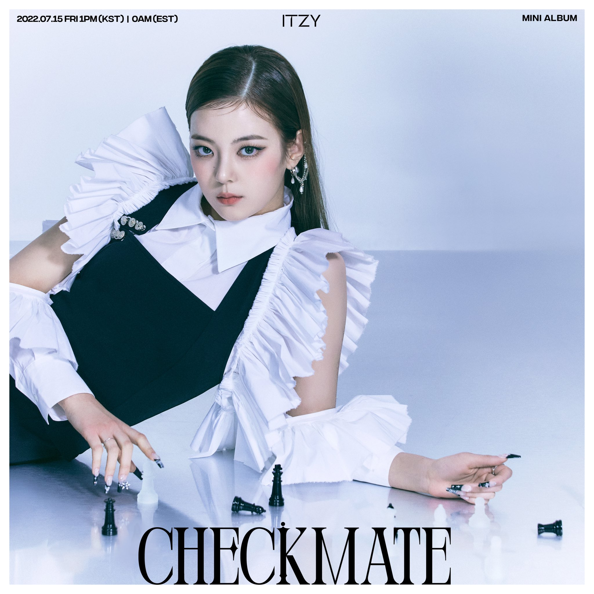

최지수의 BIO하고 사진
| BIO | 사진 |
|---|---|
|
리아(Lia)는 대한민국의 가수이자 래퍼이다. 그녀는 대한민국의 걸 그룹 ITZY의 메인 보컬이자 서브래퍼이다. 초등학교 시절 리아는 캐나다 토론토에서 살다가 북런던 칼리지에 입학하기 위해 한국으로 돌아왔다. 캐나다에서 짧은 기간 동안 그녀는 SM 엔터테인먼트에 합격했지만 부모님의 반대로 곧 자퇴했다. 2019년 1월 20일, 리아는 ITZY의 멤버로 공식적으로 데뷔했다. 그녀는 다음날 2월 12일 서울 공연예술대학을 졸업했다. 아이돌계에 입문한 지 얼마 되지 않아, 리아는 슈퍼주니어의 리툭과 함께 가온차트 뮤직 어워드의 MC로 선정되었다. |
 |